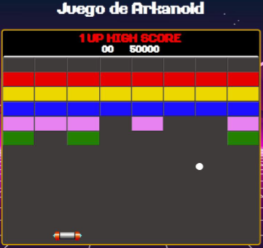

- Dentro de este marco formativo se
realizaron diversos proyectos en lenguajes HTML y CSS,
de disfrute público, que hacen posible una inmersión total
en la forma de desarrollar y diseñar.


©Web Personal creada para la materia de Lenguajes de Marcas del CFGS DAW.